Stage 2 — Label and Store Annotations in MySQL
Stage 2 implements the annotation layer of the AquaMind pipeline, where each extracted frame from Stage 1 is manually labelled by drawing bounding boxes around every visible fish. This process transforms the raw frame dataset into a supervised learning dataset by adding object-level labels to each image.
To store these labels in a structured way, a new annotations table is created in MySQL. Each annotation represents a single bounding box for one fish and is linked back to its corresponding frame via a foreign key (frame_id). The labels are also exported in YOLO format to support model training.
Video → Frames → Annotations → Database → AI model
System Prerequisites
Environment Setup
The same aquamind Conda environment from Stage 1 is used. No additional Python packages are required — mysql-connector-python, os, and datetime are already installed.
Labelling Tool
Label Studio is used for manual annotation and is launched as a Docker container. No local installation is required beyond Docker Desktop being active.
Environment & Infrastructure Setup
Label Studio Setup
Label Studio is launched as a single Docker container using the heartexlabs/label-studio:latest image. Port 8080 is mapped to the host machine and a volume mount using -v $(pwd)/mydata:/label-studio/data gives Label Studio persistent storage — all annotation data is written to the local mydata folder on the host machine rather than inside the container, meaning the work is preserved even if the container stops or is restarted.
docker run -it -p 8080:8080 -v $(pwd)/mydata:/label-studio/data heartexlabs/label-studio:latest
Project Configuration
Annotation
Inside Label Studio, a new project named AquaMind is created. The labelling interface is configured by navigating to Settings → Labelling Interface, selecting the Computer Vision category, and choosing the Object Detection with Bounding Boxes template. A single label class named "danio_rerio_golden" is defined. All extracted PNG frames from Stage 1 are imported into the project, appearing as individual tasks in the task list.
Each frame is opened individually and bounding boxes are drawn around every visible fish, as each fish receives its own bounding box.

YOLO Export
Once all frames are annotated, the project is exported in YOLO with Images format. The exported archive contains the following structure:
classes.txt # label names (label = "danio_rerio_golden")
images/ # frame images
labels/ # one .txt file per image with bounding box coordinates
notes.json # metadata
Each .txt file in the labels/ folder corresponds to one frame and contains one line per bounding box in the following format:
class_id x_center y_center width height
All five values are normalised between 0 and 1 relative to the image dimensions, making the format resolution-independent. For example:
0 0.242 0.668 0.103 0.113
This line represents one fish: class 0 (danio_rerio_golden). Each bounding box corresponds to one line in the file.

Database Schema
Before storing annotations, the annotations table is created in MySQL with a foreign key linking each annotation record back to its corresponding frame in the frames table. This structure ensures every bounding box can be traced back to its source frame and later used for model training.
CREATE TABLE annotations (
id INT AUTO_INCREMENT PRIMARY KEY, -- unique row identifier
frame_id INT, -- foreign key to frames table
FOREIGN KEY (frame_id) REFERENCES frames(id),
class_id INT, -- YOLO class index
label VARCHAR(255), -- human-readable label name
x_center FLOAT, -- normalised x center
y_center FLOAT, -- normalised y center
width FLOAT, -- normalised box width
height FLOAT, -- normalised box height
created_at TIMESTAMP -- system time of insertion
);
## Annotation Storage Pipeline
### Source Code
<a href="https://github.com/govinda-lienart/AquaMind/blob/main/store_annotations.py" target="_blank">View source on GitHub</a>
### Design Overview
The script iterates over every `.txt` file in the exported `labels/` folder. For each file, the frame number is extracted from the filename, used to retrieve the corresponding `frame_id` from the `frames` table, and each bounding box is read and inserted as a record into the `annotations` table.
### Filename Parsing and Frame ID Lookup
Label Studio exports annotation files with a hash prefix followed by the frame name (e.g. `e6d83681-frame_360.txt`). The frame number is parsed from this filename and used to query the `frames` table:
```sql
SELECT id FROM frames WHERE frame_number = %s
cursor.fetchone()[0] returns the frame_id, which is used as the foreign key when inserting into annotations. This lookup ensures every annotation is linked to the correct source frame regardless of file ordering.
Reading and Casting Bounding Box Values
Each line in the annotation file represents one bounding box. The five whitespace-separated values are read and cast to their correct types — class_id to int, and the four coordinate values to float. This casting ensures the values are stored with the correct types in MySQL.
Inserting into MySQL
For each bounding box, a record is inserted into the annotations table:
INSERT INTO annotations (frame_id, class_id, label, x_center, y_center, width, height, created_at)
VALUES (%s, %s, %s, %s, %s, %s, %s, %s)
The label field is set to "danio_rerio_golden" and created_at is generated at insertion time using datetime.datetime.now().
Saving and Cleanup
Once all files have been processed, conn.commit() permanently saves all inserted rows to the database. conn.close() then closes the MySQL connection to free resources.
## Validation
Correctness of annotation storage is verified by querying the `annotations` table directly in MySQL Workbench:
```sql
SELECT * FROM annotations;
Expected properties include one record per bounding box, correct frame_id values matching the frames table, normalised coordinate values between 0 and 1, and consistent label and class_id values across all records.

Outcome
Stage 2 establishes a reproducible annotation pipeline that links every extracted frame to a structured set of bounding box records in MySQL.
The system successfully configures Label Studio as a lightweight annotation environment, produces 366 labelled fish instances across 61 frames in YOLO format, parses and stores each bounding box as a relational record linked to its source frame, and persists all annotation data in the MySQL database running inside a Dockerised environment.
This stage forms the labelled dataset layer that enables downstream model training within the AquaMind pipeline. ```